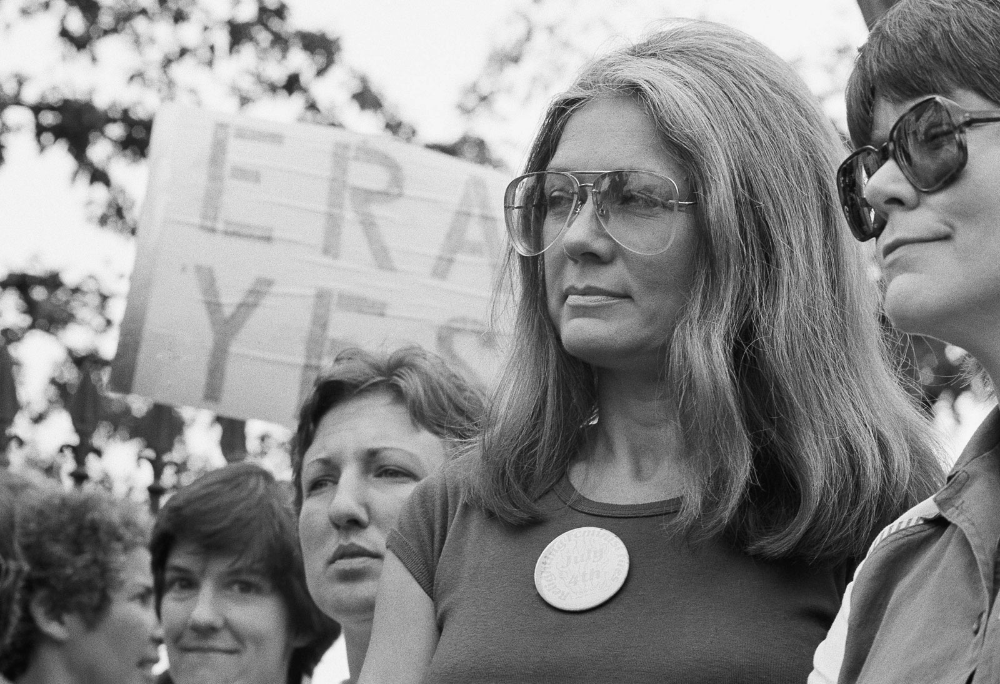

El movimiento de liberación de la mujer, o movimiento por los derechos de la mujer, fue un movimiento social de las décadas de 1960 y 1970. Buscó la igualdad de derechos, oportunidades y una mayor libertad personal para las mujeres. Coincidió y se reconoce como parte de la “segunda ola” del feminismo .